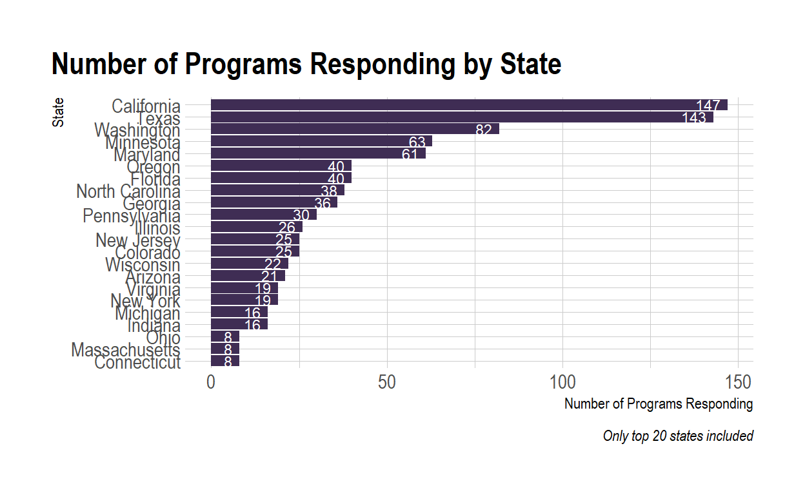
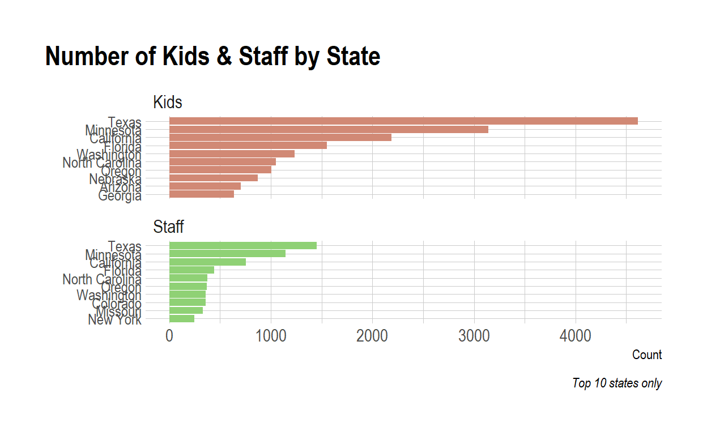
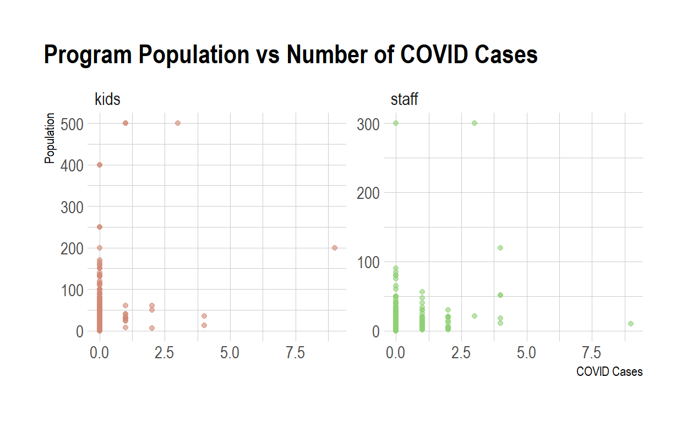
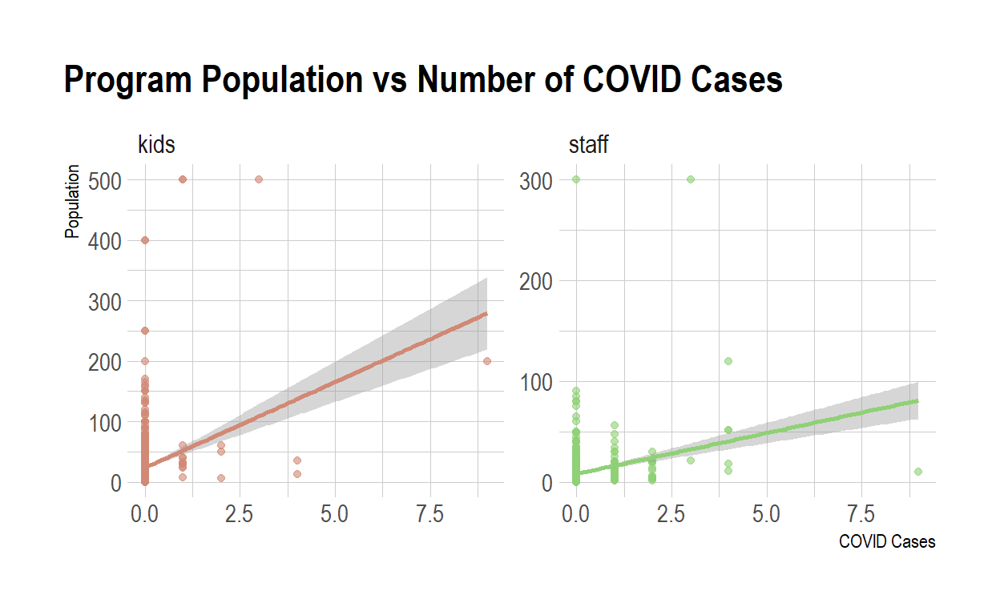
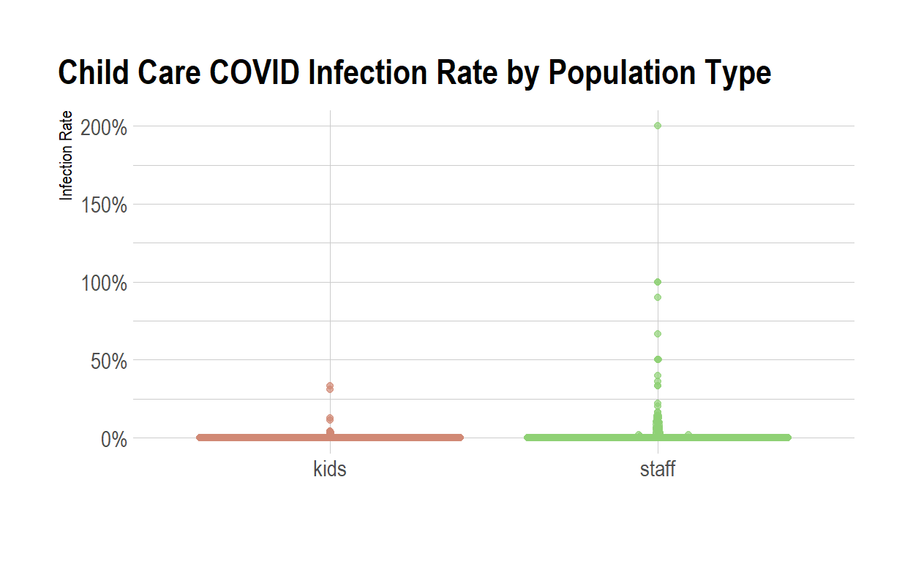
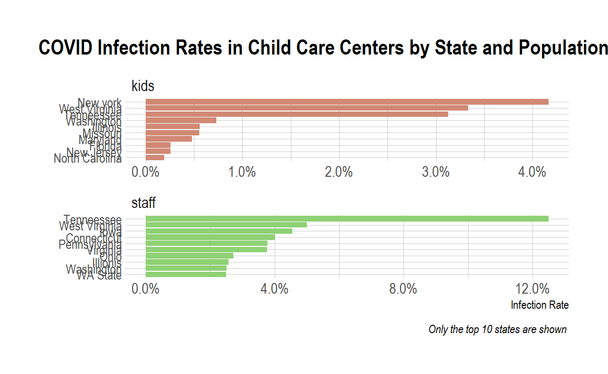

Examining child care survey data from Emily Oster
I’m a big fan of Emily Oster. Well, her work; I don’t know her personally, but she seems cool. As someone with a background in academic research, and also as a new parent, I really appreciate the thoroughness, honesty, and approachability of Cribsheet. And I’m glad she summarized all of the academic articles so I didn’t have to look for them. More recently, I’ve been a big fan of her Parent Data newsletter, which I read (on days it comes out) while my daughter Emma is napping in the morning. Likewise, her COVID Explained website has been an equally thorough/honest/approachable website for all (or most, at least) things COVID.
Unlike most other people who have data-centric websites and blogs, I’ve avoided doing any analyses related to COVID data. I don’t think the world needs yet another COVID-tracker website that someone built as part of a data science portfolio, and I’m honestly not interested enough in COVID to keep up with the data, which is changing seemingly by the second. That said, my actual job is in the Early Childhood office of the Virginia Department of Education, plus I have a 5 month old daughter who just started daycare. So early education/child care is kind of my jam, and so when I saw the Parent Data newsletter with some survey data Emily collected relating to childcare centers during COVID, I figured I could take a peek.
Before getting into the exploration here, I’m just going to copy and paste the description of the data & data collection process from the Parent Data newsletter:
What did you do?
I distributed, in various ways, a simple survey of child care providers who were open during the pandemic. I got some amazing help from Winnie.com, who sent the >survey out to all their providers. I also sent this out on Twitter, through newsletters, on Facebook, etc, etc. And then I collated responses.
Is this a scientifically valid sample and do you plan to publish the results?
No and no. This is crowdsourced. I didn’t sample randomly and I cannot be sure of the biases in responses. I am of the view (which not everyone will agree with) that some data is better than none.
Is the data perfect? Did you clean it?
No! Let me know if you see obvious errors. I did minimal cleaning - to remove places which reported fewer than two students during the pandemic or did not report any location data. Basically, I’m going to be cautious about not drawing too many conclusions from this, and so should you. I’m going to see where the data takes me, make some visualizations and summary tables, but I’m not going to, like, change my approach to public health right now as a result of these analyses.
I’ll also include all of my code inline in this post. I think this helps people see what choices I’m making, but sorry to those who find this a distraction.
Let’s take a glimpse at the data:
df %>%
glimpse()
Rows: 986
Columns: 27
$ State <chr> "Washington",...
$ `Town/County/City` <chr> NA, "New Have...
$ `Age Ranges` <chr> "6 weeks - 6 ...
$ `Single or Multiple Locations?` <chr> "Single", "Mu...
$ `Opening Details` <chr> "Open the who...
$ `Number of Students Served During Pandemic` <dbl> 4, 25, 10, 60...
$ `Number of Staff During Pandemic` <dbl> NA, 19, NA, 2...
$ `COVID-19 Cases in Children` <dbl> 0, 0, 0, 2, 0...
$ `COVID-19 Cases in Staff` <dbl> 0, 2, 0, 0, 1...
$ ...10 <lgl> NA, NA, NA, N...
$ Kids...11 <dbl> 0, 25, 0, 60,...
$ Staff...12 <dbl> 0, 19, 0, 20,...
$ `Kid COVID...13` <dbl> 0, 0, 0, 2, 0...
$ `Staff COVID...14` <dbl> 0, 2, 0, 0, 1...
$ Count...15 <dbl> 0, 1, 0, 1, 1...
$ ...16 <lgl> NA, NA, NA, N...
$ `Count of Kids` <dbl> 4, 0, 0, 0, 0...
$ `Count of Staff` <dbl> NA, 0, 0, 0, ...
$ `Kids COVID` <dbl> 0, 0, 0, 0, 0...
$ `Staff COVID...20` <dbl> 0, 0, 0, 0, 0...
$ `Total Centers` <dbl> 1, 0, 0, 0, 0...
$ ...22 <lgl> NA, NA, NA, N...
$ Kids...23 <dbl> NA, 4, 0, 0, ...
$ Staff...24 <dbl> NA, NA, 0, 0,...
$ `Kid COVID...25` <dbl> NA, 0, 0, 0, ...
$ `Staff COVID...26` <dbl> NA, 0, 0, 0, ...
$ Count...27 <dbl> NA, 1, 0, 0, ...Ok, so we see a bunch of columns here that were hidden in the Google Sheet. I downloaded this to an .xlsx to check out what these are, and it looks like they’re columns that hold calculations that feed into the summary sheet. I’m going to drop these for now – I can always replicate the calculations if I need to later.
df <- df %>%
select(c(1:9)) %>%
clean_names() %>%
filter(str_detect(state, "Minneaota", negate = TRUE)) %>%
mutate(id = row_number()) %>%
select(id, everything())
glimpse(df)
Rows: 982
Columns: 10
$ id <int> 1, 2, 3, 4, 5, ...
$ state <chr> "Washington", "...
$ town_county_city <chr> NA, "New Haven"...
$ age_ranges <chr> "6 weeks - 6 mo...
$ single_or_multiple_locations <chr> "Single", "Mult...
$ opening_details <chr> "Open the whole...
$ number_of_students_served_during_pandemic <dbl> 4, 25, 10, 60, ...
$ number_of_staff_during_pandemic <dbl> NA, 19, NA, 20,...
$ covid_19_cases_in_children <dbl> 0, 0, 0, 2, 0, ...
$ covid_19_cases_in_staff <dbl> 0, 2, 0, 0, 1, ...Now we have a data frame with 9 columns that we can explore. I think what each column represents is pretty obvious given the variable name, so I’m not going to describe each one. I will truncate the names a bit, though, just so I don’t have to type out the number_of_students_served_during_pandemic each time I want to use that variable. One thing that does seem important to point out, though is that each row/observation in the dataset represents a child care program, which could correspond to multiple sites or a single site.
df <- df %>%
rename(
location_type = single_or_multiple_locations,
num_kids = number_of_students_served_during_pandemic,
num_staff = number_of_staff_during_pandemic,
covid_kids = covid_19_cases_in_children,
covid_staff = covid_19_cases_in_staff
)
glimpse(df)
Rows: 982
Columns: 10
$ id <int> 1, 2, 3, 4, 5, 6, 7, 8, 9, 10, 11, 12, 1...
$ state <chr> "Washington", "Connecticut", "Connecticu...
$ town_county_city <chr> NA, "New Haven", "Stanford", "Cook Count...
$ age_ranges <chr> "6 weeks - 6 months, 6 months - 1 year, ...
$ location_type <chr> "Single", "Multiple", "Single", "Multipl...
$ opening_details <chr> "Open the whole time", "Open the whole t...
$ num_kids <dbl> 4, 25, 10, 60, 40, 12, 30, 250, 100, 5, ...
$ num_staff <dbl> NA, 19, NA, 20, NA, NA, NA, 41, 30, 1, 2...
$ covid_kids <dbl> 0, 0, 0, 2, 0, 0, 0, 0, 0, 0, 0, 0, 0, 0...
$ covid_staff <dbl> 0, 2, 0, 0, 1, 0, 0, 0, 2, 0, 0, 0, 0, 0...First, let’s take a look at who responded to the survey based on the state they live in
df %>%
count(state) %>%
top_n(20) %>%
ggplot(aes(x = n, y = fct_reorder(state, n))) +
geom_col(fill = purple) +
geom_text(aes(x = n-2, label = n), hjust = 1, color = "white", size = 3) +
labs(
x = "Number of Programs Responding",
y = "State",
title = "Number of Programs Responding by State",
caption = "Only top 20 states included"
)

Right, so, one thing to keep in mind is that we have far more responses from a handful of states – California and Texas mostly, but also Washington and Maryland. Let’s look to see if we see this same pattern in the number of children attending these programs as well as the number of staff working at these programs.
facet_labs <- as_labeller(c("num_kids" = "Kids", "num_staff" = "Staff"))
df %>%
pivot_longer(cols = c("num_kids", "num_staff"),
names_to = "name",
values_to = "value") %>%
count(state, name, wt = value) %>%
group_by(name) %>%
top_n(10) %>%
ungroup() %>%
ggplot(aes(x = n, y = reorder_within(state, n, name), fill = name)) +
geom_col() +
facet_wrap(~name, nrow = 2, scales = "free_y", labeller = facet_labs) +
scale_y_reordered() +
scale_fill_ipsum() +
#theme_minimal() +
labs(
x = "Count",
y = "",
title = "Number of Kids & Staff by State",
caption = "Top 10 states only"
) +
theme(
legend.position = "none",
axis.text.y = element_text(size = 10)
)

So, something is def going on with Texas here – it looks like they have a ton of kids reported proportional to their number of staff. Let’s see if we can look at the ratios for Texas, California, and Minnesota to get a sense of things.
df %>%
filter(state %in% c("Texas", "California", "Minnesota")) %>%
group_by(state) %>%
summarize(
kids = sum(num_kids, na.rm = TRUE),
staff = sum(num_staff, na.rm = TRUE)
) %>%
ungroup() %>%
mutate(ratio = kids/staff) %>%
make_table()
| state | kids | staff | ratio |
|---|---|---|---|
| California | 2189 | 756 | 2.895503 |
| Minnesota | 3142 | 1145 | 2.744105 |
| Texas | 4617 | 1454 | 3.175378 |
The ratio actually looks reasonable for Texas (and all are very low in the grand scheme of things) – for context, the legal ratio for infant classrooms in Virginia is 4:1, and these are all well below that.
Now that we have a general sense of who responded, let’s explore the data on the number and rate of COVID cases a bit. First, I’m going to make a scatter plot with the number of people at a center against the number of COVID cases in a center. We would expect the number of cases to increase as the number of people increases, but the shape and strength of this relationship could be interesting.
df_longer <- df %>%
pivot_longer(cols = c("num_kids", "num_staff", "covid_kids", "covid_staff"),
names_to = "name",
values_to = "value") %>%
extract(col = "name",
into = c("type", "group"),
regex = "(.*)_(.*)") %>%
pivot_wider(names_from = type,
values_from = value)
df_longer %>%
ggplot(aes(x = covid, y = num, color = group)) +
geom_point(alpha = .6) +
labs(
title = "Program Population vs Number of COVID Cases",
y = "Population",
x = "COVID Cases"
) +
facet_wrap(~group, scales = "free") +
scale_color_ipsum() +
theme(
legend.position = "none"
)

Well, this doesn’t show what I thought it would. I expected a weak but positive association between total program population and number of COVID cases (i.e. as your program has more people, you also have more COVID cases), but we don’t see that here. Probably because COVID cases are so rare, especially in kids, we actually don’t see much of a relationship. Although note that if we plot regression lines (as in the plot below), the estimated relationship is positive, but this is due pretty much entirely to outliers. We could get into some regression diagnostics to confirm it more formally, but eyeballing it is good enough for a blog post.
Another related point is that it appears a couple of programs are reporting 300 staff. I’d assume this is a data entry error, but it’s also possible that this is a corporate program that’s taking a liberal view of what “staff” means here.
df_longer %>%
ggplot(aes(x = covid, y = num, color = group)) +
geom_point(alpha = .6) +
geom_smooth(method = "lm") +
labs(
title = "Program Population vs Number of COVID Cases",
y = "Population",
x = "COVID Cases"
) +
facet_wrap(~group, scales = "free") +
scale_color_ipsum() +
theme(
legend.position = "none"
)

After seeing this, a better approach might be to plot the infection rate for each program and then take a look at which have particularly high infection rates. We can do this using a beeswarm plot:
df_longer %>%
mutate(infect_rate = covid/num) %>%
ggplot(aes(y = infect_rate, x = group, color = group)) +
geom_quasirandom(alpha = .7) +
labs(
x = "",
y = "Infection Rate",
title = "Child Care COVID Infection Rate by Population Type"
) +
scale_color_ipsum() +
scale_y_continuous(labels = scales::percent_format()) +
theme(
legend.position = "none"
)

We see in this plot that most places are at 0% infections for kids and staff, but a handful show rates higher than 25% for kids and higher than 50% for staff. One program has a 200% infection rate for staff, which must be a data entry error. Since infections are incredibly infrequent, my suspicion is that these high-infection-rate programs have very small populations, so let’s take a look at the top 10:
df_longer %>%
mutate(infect_rate = covid/num) %>%
arrange(desc(infect_rate)) %>%
select(-c("id", "age_ranges", "location_type", "opening_details")) %>%
head(10L) %>%
make_table()
| state | town_county_city | group | num | covid | infect_rate |
|---|---|---|---|---|---|
| New York | Westchester | staff | 1 | 2 | 2.0000000 |
| Maryland | Anne Arundel | staff | 1 | 1 | 1.0000000 |
| Texas | Williamson | staff | 1 | 1 | 1.0000000 |
| Washington | King | staff | 10 | 9 | 0.9000000 |
| Minnesota | Hennepin | staff | 3 | 2 | 0.6666667 |
| Virginia | Arlington | staff | 4 | 2 | 0.5000000 |
| Virginia | Arlington | staff | 4 | 2 | 0.5000000 |
| Indiana | Marion | staff | 2 | 1 | 0.5000000 |
| Minnesota | Ramsey | staff | 5 | 2 | 0.4000000 |
| North Carolina | Henderson | staff | 11 | 4 | 0.3636364 |
Our 200% infection rate program is a site in NY that reported 1 staff member but 2 cases of COVID in staff members. The most surprising piece of data in this table, though, is the program in King, Washington, where 9 of the 10 staff contracted COVID. Also, it’s hard to tell, but I suspect programs in Arlington, VA might be duplicate entries since the data are identical.
Another question I’m thinking about now is which state had the highest rate of infection:
df_longer %>%
group_by(state, group) %>%
summarize(num = sum(num, na.rm = TRUE),
covid = sum(covid, na.rm = TRUE)) %>%
ungroup() %>%
mutate(infect_rate = covid/num) %>%
group_by(group) %>%
top_n(10) %>%
ungroup() %>%
ggplot(aes(y = reorder_within(state, infect_rate, group), x = infect_rate, fill = group)) +
geom_col() +
facet_wrap(~group, nrow = 2, scales = "free") +
labs(
x = "Infection Rate",
y = "",
title = "COVID Infection Rates in Child Care Centers by State and Population Type",
caption = "Only the top 10 states are shown "
) +
scale_y_reordered() +
scale_x_continuous(labels = scales::percent_format()) +
scale_fill_ipsum() +
theme(
legend.position = "none",
axis.text.y = element_text(size = 10),
plot.title = element_text(size = 16)
)

Here, we see West VA and Tennessee as having the highest infection rates for kids and staff. This is probably driven by low response rates from those states – recall that in our first plot, neither of these states showed up as having a large number of programs responding – but let’s check it out:
df_longer %>%
filter(state %in% c("Tennessee", "West Virginia")) %>%
group_by(state, group) %>%
summarize(num = sum(num, na.rm = TRUE),
covid = sum(covid, na.rm = TRUE)) %>%
ungroup() %>%
mutate(infect_rate = covid/num) %>%
make_table()
| state | group | num | covid | infect_rate |
|---|---|---|---|---|
| Tennessee | kids | 173 | 0 | 0.0000000 |
| Tennessee | staff | 40 | 0 | 0.0000000 |
| West Virginia | kids | 60 | 2 | 0.0333333 |
| West Virginia | staff | 40 | 2 | 0.0500000 |
So this puzzled me for a while. According to this table, Tennessee actually has a 0% infection rate for both kids and staff and not the ~3% and ~12% rates for kids and staff, respectively, that the above plot indicates. After I just checked over my code several times, it turns out that it’s due to a typo in the survey response – the fictional state of “Tenneessee” has a high infection rate; the actual state of Tennessee does not. West Virginia, though, is showing a higher rate due to sampling error and low response rate (as we can see in the table above).
And, finally, since I’m a new dad, let’s take a look at cases in places that accept the youngest kids – ages 6 week through 6 months – and compare those to all programs, just looking at kids and ignoring staff.
df %>%
mutate(smol_kiddos = if_else(str_detect(age_ranges, "6 weeks"), "Yes", "No")) %>%
group_by(smol_kiddos) %>%
summarize(across(c("num_kids", "covid_kids"), ~sum(.x, na.rm = TRUE))) %>%
filter(!is.na(smol_kiddos)) %>%
ungroup() %>%
adorn_totals("row") %>%
mutate(infect_rate = round(100*(covid_kids/num_kids), 2)) %>%
make_table()
| smol_kiddos | num_kids | covid_kids | infect_rate |
|---|---|---|---|
| No | 6055 | 6 | 0.10 |
| Yes | 18201 | 32 | 0.18 |
| Total | 24256 | 38 | 0.16 |
So, there really aren’t differences here between programs that accept the youngest kids and all programs. There might be a difference between programs that accept kids 6 weeks - 6 months and those that don’t, but again, the overall infection rate is so low that it’s hard to tell.
There’s definitely more I could do with this data, but I just wanted to give it a quick run through. I am intentionally avoiding statistical modeling here, though, because 1) I don’t want to take the time to clean the data thoroughly enough to model it, and 2) I don’t know very much about modeling zero-inflated count data, so we’ll just leave it at this for now. But I did appreciate the opportunity to dig in a little bit – thanks Emily!
For attribution, please cite this work as
EE (2020, June 25). Eric Ekholm: Exploring Emily Oster's COVID Data. Retrieved from https://www.ericekholm.com/posts/2021-01-06-exploring-emily-osters-covid-data/
BibTeX citation
@misc{ee2020exploring,
author = {EE, },
title = {Eric Ekholm: Exploring Emily Oster's COVID Data},
url = {https://www.ericekholm.com/posts/2021-01-06-exploring-emily-osters-covid-data/},
year = {2020}
}